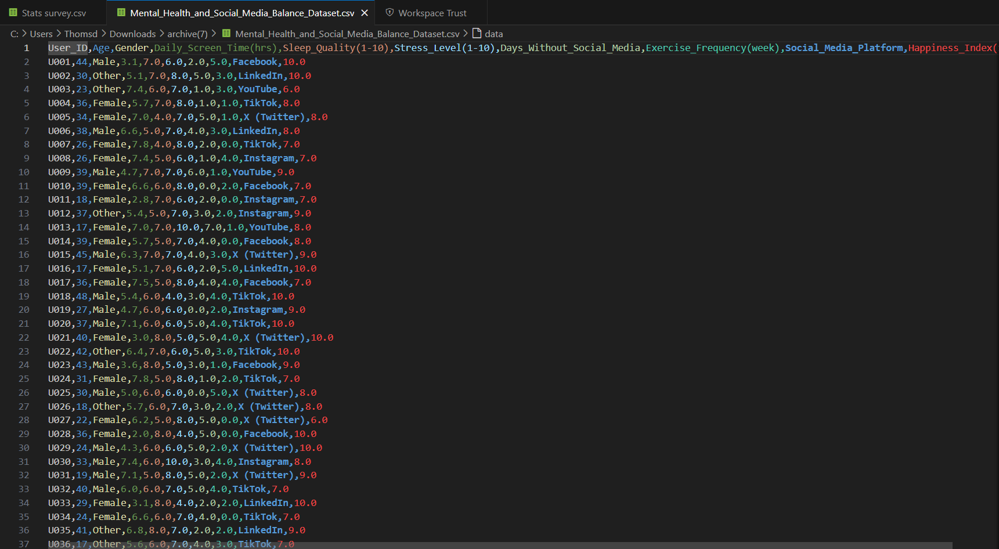
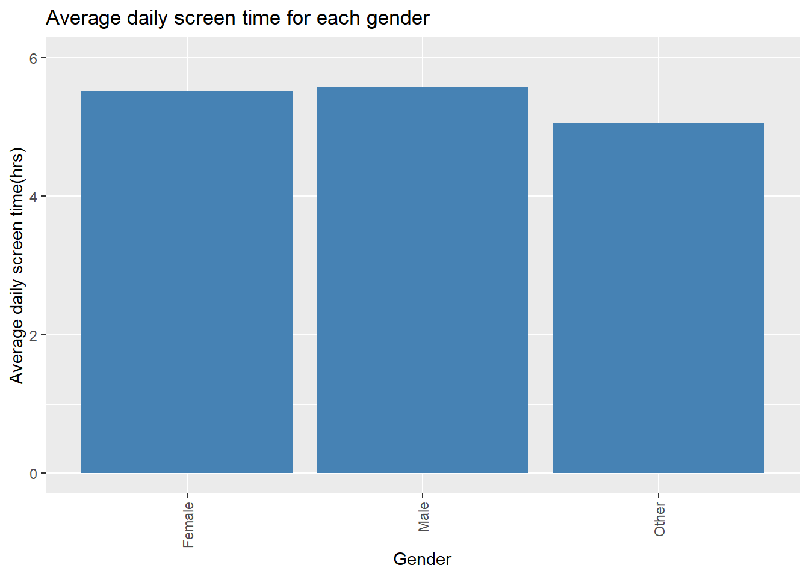
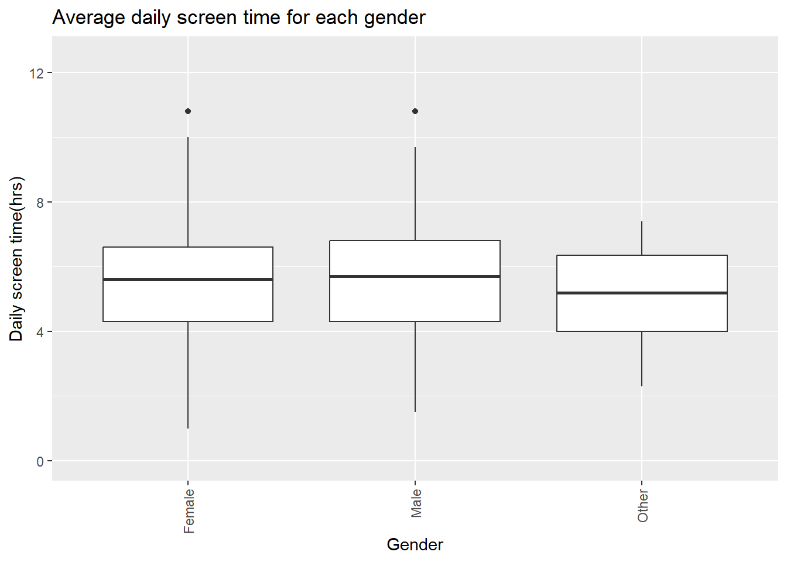
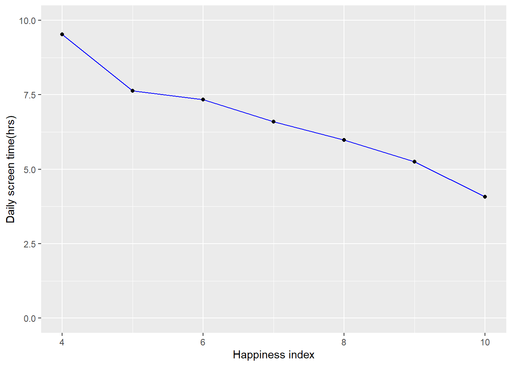
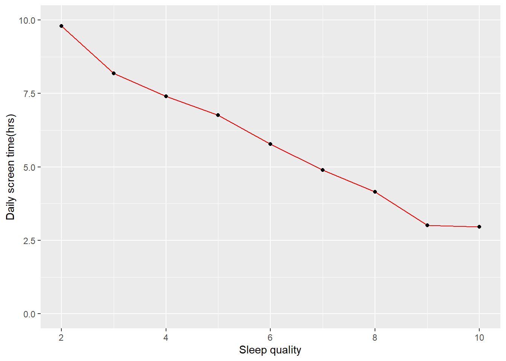
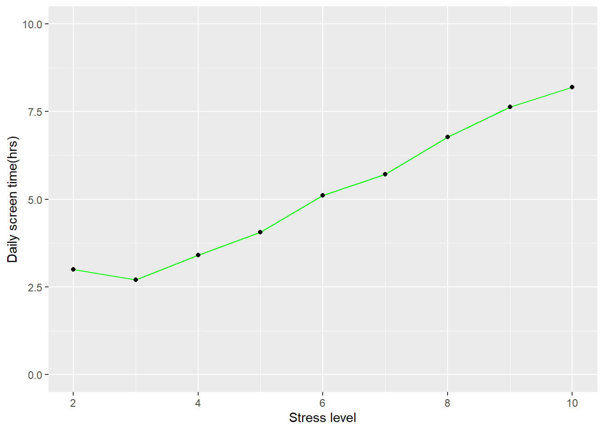
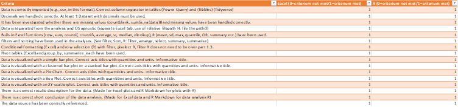

Name student: Thomas Elzinga
Date: 12-11-2025
In today’s digital era, there is a growing concern about the impact of social media on mental well-being. Managing screen time, reducing exposure to negative content and making more genuine connections with people around you. Therefore, understanding the relationship between social media usage patterns and mental health indicators is crucial. The dataset analyzed in this report consists of a comma-separated values (CSV) file containing data from 500 social media users. For each individual, variables such as daily screen time, number of platforms used, frequency of interactions, mood scores, and self-reported stress levels are recorded. Additionally, users are categorized into different demographic groups, such as age ranges, gender, to facilitate comparative analysis.
The dataset originates from Kaggle.
The primary goal of the data analysis of this dataset is to evaluate and compare the relationship between social media usage patterns and mental health indicators across different demographic groups and user behaviors. The analysis specifically aims to provide the following insights:
• Identification of the demographic group(s) with the highest average screen time and corresponding mental health scores. This helps determine which user groups may be more vulnerable to the negative impacts of excessive social media use.
• Identification of the specific social media platform or activity type associated with the highest amount of average daily screen time.
• Identification of correlation between average daily screen time and mental well being(Rating happiness score, stress level and sleep quality)
library(tidyverse)## ── Attaching core tidyverse packages ───
## ✔ dplyr 1.1.4 ✔ readr 2.1.5
## ✔ forcats 1.0.1 ✔ stringr 1.5.2
## ✔ ggplot2 4.0.0 ✔ tibble 3.3.0
## ✔ lubridate 1.9.4 ✔ tidyr 1.3.1
## ✔ purrr 1.1.0
## ── Conflicts ── tidyverse_conflicts() ──
## ✖ dplyr::filter() masks stats::filter()
## ✖ dplyr::lag() masks stats::lag()
## ℹ Use the conflicted package (<http://conflicted.r-lib.org/>) to force all conflicts to become errorslibrary(kableExtra)##
## Attaching package: 'kableExtra'
##
## The following object is masked from 'package:dplyr':
##
## group_rowsFirst, the data was viewed in Visual Studio Code. To make the identification of different columns more clear, the rainbow csv extension was used. A screenshot of the import can be seen below.

Looking at the file, it’s a CSV file with the comma as the column
separator and decimals separated by a period.
A dataframe was created and the file was loaded the in R via
read_csv:
file_path <- "./Mental_Health_and_Social_Media_Balance_Dataset.csv"
df1 <- read_csv(file_path)## Rows: 500 Columns: 10
## ── Column specification ────────────────
## Delimiter: ","
## chr (3): User_ID, Gender, Social_Media_Platform
## dbl (7): Age, Daily_Screen_Time(hrs), Sleep_Quality(1-10), Stress_Level(1-10...
##
## ℹ Use `spec()` to retrieve the full column specification for this data.
## ℹ Specify the column types or set `show_col_types = FALSE` to quiet this message.head(df1)## # A tibble: 6 × 10
## User_ID Age Gender `Daily_Screen_Time(hrs)` `Sleep_Quality(1-10)`
## <chr> <dbl> <chr> <dbl> <dbl>
## 1 U001 44 Male 3.1 7
## 2 U002 30 Other 5.1 7
## 3 U003 23 Other 7.4 6
## 4 U004 36 Female 5.7 7
## 5 U005 34 Female 7 4
## 6 U006 38 Male 6.6 5
## # ℹ 5 more variables: `Stress_Level(1-10)` <dbl>,
## # Days_Without_Social_Media <dbl>, `Exercise_Frequency(week)` <dbl>,
## # Social_Media_Platform <chr>, `Happiness_Index(1-10)` <dbl>All of the data was correctly imported, the dataset does not contain any missing data and there are no duplicates. All of the columns are imported as the correct data type. Numeric data is imported as dbl(double) and words are imported as chr(character). Therefore no data cleaning was needed and the analysis could proceed.
There was no need for cleaning the dataset for this analysis. Therefore the data was modified to demonstrate and show what would have needed to be done if the file contained duplicates and blanks, the original file was modified. The modified file was cleaned for demonstrative purposes.
modified_file <- "./Mental_Health_and_Social_Media_Balance_Dataset_Modified_2.csv"
df9 <- read_csv(modified_file)## Rows: 501 Columns: 10
## ── Column specification ────────────────
## Delimiter: ","
## chr (3): User_ID, Gender, Social_Media_Platform
## dbl (7): Age, Daily_Screen_Time(hrs), Sleep_Quality(1-10), Stress_Level(1-10...
##
## ℹ Use `spec()` to retrieve the full column specification for this data.
## ℹ Specify the column types or set `show_col_types = FALSE` to quiet this message.head(df9)## # A tibble: 6 × 10
## User_ID Age Gender `Daily_Screen_Time(hrs)` `Sleep_Quality(1-10)`
## <chr> <dbl> <chr> <dbl> <dbl>
## 1 U001 44 Male 3.1 7
## 2 U002 30 Other 5.1 7
## 3 U003 23 Other 7.4 6
## 4 U004 36 Female 5.7 7
## 5 U005 34 Female 7 4
## 6 U006 38 Male 6.6 5
## # ℹ 5 more variables: `Stress_Level(1-10)` <dbl>,
## # Days_Without_Social_Media <dbl>, `Exercise_Frequency(week)` <dbl>,
## # Social_Media_Platform <chr>, `Happiness_Index(1-10)` <dbl>First the amount of blanks in the dataframe should be identified, by counting the amount of NA values in the dataframe.
sum(is.na.data.frame(df9))## [1] 1The amount of missing values in this dataframe is 1
Now the NA value has to idendified, the position of the missing value in the dataframe should be determined.
which(is.na(df9), arr.ind=TRUE)## row col
## [1,] 113 2The NA value seems to be located on row 113 and column 2.
Now the row can be shown by filtering on column 2
df9 %>%
filter(is.na(Age))## # A tibble: 1 × 10
## User_ID Age Gender `Daily_Screen_Time(hrs)` `Sleep_Quality(1-10)`
## <chr> <dbl> <chr> <dbl> <dbl>
## 1 U113 NA Female 4.3 6
## # ℹ 5 more variables: `Stress_Level(1-10)` <dbl>,
## # Days_Without_Social_Media <dbl>, `Exercise_Frequency(week)` <dbl>,
## # Social_Media_Platform <chr>, `Happiness_Index(1-10)` <dbl>Then there was checked if there were any duplicates
sum(duplicated(df9))## [1] 1There seems to be one duplicate in this dataframe
Now the duplicate row in this dataframe needs to be identified.
df9 %>%
group_by_all() %>%
filter(n()>1) %>%
ungroup()## # A tibble: 2 × 10
## User_ID Age Gender `Daily_Screen_Time(hrs)` `Sleep_Quality(1-10)`
## <chr> <dbl> <chr> <dbl> <dbl>
## 1 U136 47 Female 2.9 8
## 2 U136 47 Female 2.9 8
## # ℹ 5 more variables: `Stress_Level(1-10)` <dbl>,
## # Days_Without_Social_Media <dbl>, `Exercise_Frequency(week)` <dbl>,
## # Social_Media_Platform <chr>, `Happiness_Index(1-10)` <dbl>There were two duplicate rows in this dataframe, U136 seems to be 2 times in this dataframe.
The dataframe needs to be cleaned by removing one of the rows.
which(duplicated(df9), arr.ind=TRUE)## [1] 137Rows 113 and 137 needed to be removed
df10 <- df9[-c(113, 137), ]
df10## # A tibble: 499 × 10
## User_ID Age Gender `Daily_Screen_Time(hrs)` `Sleep_Quality(1-10)`
## <chr> <dbl> <chr> <dbl> <dbl>
## 1 U001 44 Male 3.1 7
## 2 U002 30 Other 5.1 7
## 3 U003 23 Other 7.4 6
## 4 U004 36 Female 5.7 7
## 5 U005 34 Female 7 4
## 6 U006 38 Male 6.6 5
## 7 U007 26 Female 7.8 4
## 8 U008 26 Female 7.4 5
## 9 U009 39 Male 4.7 7
## 10 U010 39 Female 6.6 6
## # ℹ 489 more rows
## # ℹ 5 more variables: `Stress_Level(1-10)` <dbl>,
## # Days_Without_Social_Media <dbl>, `Exercise_Frequency(week)` <dbl>,
## # Social_Media_Platform <chr>, `Happiness_Index(1-10)` <dbl>Rows 113 and 137 are removed and a new cleaned dataframe has been created
This can be controlled by using the filter functions on the new dataframe
sum(is.na.data.frame(df10))## [1] 0sum(duplicated(df10))## [1] 0Both values are zero so in the new dataframe no more NA values or duplicates remain
For the rest of the analysis, the orignal dataset was used. First a standard analysis was performed on the mean, min/max and standard deviation of the data screen time.
#mean
mean(df1$`Daily_Screen_Time(hrs)`)## [1] 5.53#standard deviation
sd(df1$`Daily_Screen_Time(hrs)`)## [1] 1.734877#median
median(df1$`Daily_Screen_Time(hrs)`)## [1] 5.6#minimum
min(df1$`Daily_Screen_Time(hrs)`)## [1] 1#maximum
max(df1$`Daily_Screen_Time(hrs)`)## [1] 10.8There was found that the average screen time of all users was 5,53 hours. The median was 5,6 hours, which gives a good idea of the distribution of the data. The mean and average are close, this means that the amount of users having more or less than the average daily screen time are almost the same. There were no users with less than 1 hour of screen time and the highest amount of screen time was 10,8 hours a day.
To identify which of the genders has the highest average amount of screen time, the averages of each gender needed to be calculated. The function summarize_each and mean where used to identify the genders and calculate the average daily screen time of each gender.
df2 <- df1 %>%
group_by(Gender) %>%
summarise(across(`Daily_Screen_Time(hrs)`, mean))
df2## # A tibble: 3 × 2
## Gender `Daily_Screen_Time(hrs)`
## <chr> <dbl>
## 1 Female 5.51
## 2 Male 5.59
## 3 Other 5.07plot1 <- df2 %>% ggplot(aes(x = Gender, y = `Daily_Screen_Time(hrs)`)) +
geom_bar(stat="identity", fill="steelblue") +
labs(title="Average daily screen time for each gender") +
theme(axis.text.x = element_text(angle = 90, hjust=1, vjust=0.5)) +
ylab("Average daily screen time(hrs)") +
ylim(c(0, 6))
plot1
In this chart can be seen that males have the highest average daily screen time, followed by females and with Others having the lowest average screen time. To gain more insight in the distribution of the average screen time a boxplot was created.
plot2 <- df1 %>%
ggplot(aes(x = Gender, y = `Daily_Screen_Time(hrs)`)) +
geom_boxplot() +
labs(title="Average daily screen time for each gender") +
theme(axis.text.x = element_text(angle = 90, hjust=1, vjust=0.5)) +
ylab("Daily screen time(hrs)") +
ylim(c(0, 12.5))
plot2
In this boxplot can be seen that Males still rank highest in average daily screen time. The difference between Males and females is not very big. Males and females seem both to be distributed along a broad spectrum of data. With females having a larger error rate and standard deviation. The minum and maximum of Females seem to be higher than the min and max of Males. The gender Other seems to have a more equal distribution of its data and does not have large minimum are maximum values.
To find the correlation between daily screen time and mental health indicators, 3 factors were measured. Those indicators are; happines index, sleep quality and stress levels. First 3 dataframes were made consisting of average daily screen time and one of the health indicator factors.
#dataframe sleep quality
df3 <- df1 %>%
group_by(`Sleep_Quality(1-10)`) %>%
summarise(across(`Daily_Screen_Time(hrs)`, mean))
df3## # A tibble: 9 × 2
## `Sleep_Quality(1-10)` `Daily_Screen_Time(hrs)`
## <dbl> <dbl>
## 1 2 9.8
## 2 3 8.19
## 3 4 7.41
## 4 5 6.76
## 5 6 5.78
## 6 7 4.89
## 7 8 4.15
## 8 9 3.01
## 9 10 2.97#dataframe stress levels
df4 <- df1 %>%
group_by(`Stress_Level(1-10)`) %>%
summarise(across(`Daily_Screen_Time(hrs)`, mean))
df4## # A tibble: 9 × 2
## `Stress_Level(1-10)` `Daily_Screen_Time(hrs)`
## <dbl> <dbl>
## 1 2 3
## 2 3 2.7
## 3 4 3.41
## 4 5 4.06
## 5 6 5.11
## 6 7 5.71
## 7 8 6.77
## 8 9 7.63
## 9 10 8.2#dataframe happiness index
df5 <- df1 %>%
group_by(`Happiness_Index(1-10)`) %>%
summarise(across(`Daily_Screen_Time(hrs)`, mean))
df5## # A tibble: 7 × 2
## `Happiness_Index(1-10)` `Daily_Screen_Time(hrs)`
## <dbl> <dbl>
## 1 4 9.53
## 2 5 7.64
## 3 6 7.34
## 4 7 6.59
## 5 8 5.98
## 6 9 5.26
## 7 10 4.08The dataframes were plotted in 3 linegraphs. Each line graph has the daily average screen time on the y-axis and on of the health factors 1-10 on the x-axis.
library(ggplot2)
#plot happiness index
ggplot(data=df5, aes(x=`Happiness_Index(1-10)`, y=`Daily_Screen_Time(hrs)`, group=1)) +
geom_line(color="blue")+
geom_point() +
ylab("Daily screen time(hrs)") +
xlab("Happiness index") +
ylim(c(0, 10)) +
xlim(c(4, 10))
#Plot Sleep sleep quality
ggplot(data=df3, aes(x=`Sleep_Quality(1-10)`, y=`Daily_Screen_Time(hrs)`, group=1)) +
geom_line(color="red")+
geom_point() +
ylab("Daily screen time(hrs)") +
xlab("Sleep quality") +
ylim(c(0, 10)) +
xlim(c(2, 10))
#Plot stress levels
ggplot(data=df4, aes(x=`Stress_Level(1-10)`, y=`Daily_Screen_Time(hrs)`, group=1)) +
geom_line(color="green")+
geom_point() +
ylab("Daily screen time(hrs)") +
xlab("Stress level") +
ylim(c(0, 10)) +
xlim(c(2, 10))
In the xy-scatter plots of the 3 health indicators clear correlation between average daily screen time and the mental health factor can be seen. In the plots of happiness and sleep quality can be observed that as the average daily screen time declines the happiness index becomes higher. While stress levels rise when the average daily screen time goes up.
To find which of the participants had the highest amount of screen time and worst mental state, there could be used multiple methods. By first using MIN MAX and XLOOKUP for finding the participant.
Finding the row with the highest amount of daily screen time
df1 %>%
filter(`Daily_Screen_Time(hrs)` == max(`Daily_Screen_Time(hrs)`))## # A tibble: 2 × 10
## User_ID Age Gender `Daily_Screen_Time(hrs)` `Sleep_Quality(1-10)`
## <chr> <dbl> <chr> <dbl> <dbl>
## 1 U249 46 Female 10.8 5
## 2 U326 27 Male 10.8 2
## # ℹ 5 more variables: `Stress_Level(1-10)` <dbl>,
## # Days_Without_Social_Media <dbl>, `Exercise_Frequency(week)` <dbl>,
## # Social_Media_Platform <chr>, `Happiness_Index(1-10)` <dbl>There seem to be two users with the exact same amount of Daily maximum screen time;U249 and U326. These users have both a daily screen time of 10,8 hours.
Finding the row with the lowest amount of screen time
df1 %>%
filter(`Daily_Screen_Time(hrs)` == min(`Daily_Screen_Time(hrs)`))## # A tibble: 2 × 10
## User_ID Age Gender `Daily_Screen_Time(hrs)` `Sleep_Quality(1-10)`
## <chr> <dbl> <chr> <dbl> <dbl>
## 1 U040 23 Female 1 9
## 2 U095 41 Female 1 7
## # ℹ 5 more variables: `Stress_Level(1-10)` <dbl>,
## # Days_Without_Social_Media <dbl>, `Exercise_Frequency(week)` <dbl>,
## # Social_Media_Platform <chr>, `Happiness_Index(1-10)` <dbl>There seem to be also two users who have the lowest amount of screen time of all the participant, User 040 and 095. These users have daily screen time of 1 hour a day.
Now there has to be found out if users with the highest daily screen time is the same when arranging from highest to lowest.
Arranging from highest to lowest daily screen time
df7 <- df1 %>%
arrange(desc(`Daily_Screen_Time(hrs)`))
df7## # A tibble: 500 × 10
## User_ID Age Gender `Daily_Screen_Time(hrs)` `Sleep_Quality(1-10)`
## <chr> <dbl> <chr> <dbl> <dbl>
## 1 U249 46 Female 10.8 5
## 2 U326 27 Male 10.8 2
## 3 U203 48 Female 10 3
## 4 U213 17 Female 9.8 4
## 5 U057 38 Female 9.7 3
## 6 U077 48 Female 9.7 4
## 7 U389 40 Male 9.7 4
## 8 U441 17 Female 9.5 4
## 9 U242 32 Male 9.4 3
## 10 U476 26 Female 9.3 3
## # ℹ 490 more rows
## # ℹ 5 more variables: `Stress_Level(1-10)` <dbl>,
## # Days_Without_Social_Media <dbl>, `Exercise_Frequency(week)` <dbl>,
## # Social_Media_Platform <chr>, `Happiness_Index(1-10)` <dbl>It indeed are the same two users who have the highest amount of daily screen time.
Arranging from lowest to highest amount daily screen time
df8 <- df1 %>%
arrange(`Daily_Screen_Time(hrs)`)
df8## # A tibble: 500 × 10
## User_ID Age Gender `Daily_Screen_Time(hrs)` `Sleep_Quality(1-10)`
## <chr> <dbl> <chr> <dbl> <dbl>
## 1 U040 23 Female 1 9
## 2 U095 41 Female 1 7
## 3 U283 38 Female 1.5 9
## 4 U379 23 Male 1.5 9
## 5 U295 30 Female 1.7 9
## 6 U325 18 Male 1.7 9
## 7 U150 34 Female 1.8 9
## 8 U028 36 Female 2 8
## 9 U051 25 Female 2 9
## 10 U261 47 Female 2.1 8
## # ℹ 490 more rows
## # ℹ 5 more variables: `Stress_Level(1-10)` <dbl>,
## # Days_Without_Social_Media <dbl>, `Exercise_Frequency(week)` <dbl>,
## # Social_Media_Platform <chr>, `Happiness_Index(1-10)` <dbl>It indeed are the same two users who have the lowest amount of daily screen time.
The analysis of the dataset mental health and social media habits with 500 users, contained some interesting results. This analysis had multiple aims, all trying to find out the correlation between mental health and social media habits. Identification of the user group with the highest amount of average daily screen time. Here there was sorted between 3 different genders. Male, female and others. In the results of this analysis the group with the highest amount of average screen time was Males. The difference between the genders was not very large, especially the difference between males and females was small. The minimum and maximum value of average daily screen time was ranging from 1-10.8 hours. Both top end bottom 2 of the dataset could be succesfully identified using filtering and sorting.
The social media platform with the highest effect on the screen time of the users was successfully identified in this analysis. Instagram had the highest average screen time for all of the users. Instagram had an average daily screen time of 6,08 hours per day. Instagram was followed by Facebook and Tiktok for second and third highest. All social media platforms had an average daily screen time of 5 hours.
To find the correlation between social media usage and mental health, 3 different health factors were measured. The results for these were very interesting. In the analysis 3 xy-scatter plots were made by plotting the average daily screen time, against 1 of the 3 health indicators. In the graphs, could be seen that stress levels go up when the daily screen time rises. Sleep quality and happiness go down as the screen becomes less. So screen time has a negative effect on happiness and sleep quality and increases stress levels.
There can be concluded that social media exposure and screen time have a negative effect on the mental wellbeing of the users in this analysis. The analysis could be expanded and more research should be done in the future about the negative effects of social media on mental health.

• Checklist is complete